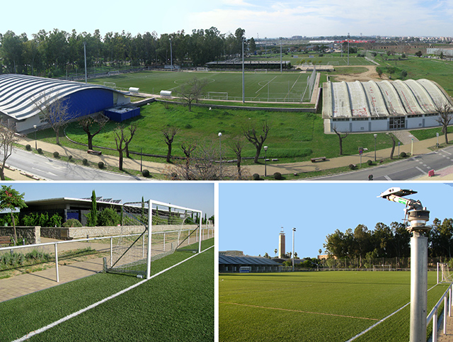

Conferencias Magistrales sobre la Industria del Deporte
En este bloque del evento de empleo universitario, expertos del sector analizan la inserción laboral, la gestión de instalaciones de alto rendimiento y las nuevas oportunidades de negocio vinculadas a la salud y el ejercicio físico.

Bloques de Ponencias y Salidas Profesionales
Consulta los temas principales que se abordarán en las conferencias de deporte:
-
Gestión de Instalaciones y Clubes Profesionales
- Ponencia 1: Dirección y administración de complejos deportivos universitarios y municipales.
- Ponencia 2: Marketing y captación de patrocinadores en entidades deportivas.
-
Emprendimiento y Startups Deportivas
- Ponencia 3: Creación de centros de entrenamiento personal especializados en salud.
- Ponencia 4: Aplicación de nuevas tecnologías y wearables en el mercado laboral del deporte.
-
Salidas en el Deporte Escolar y Adaptado
- Ponencia 5: Oportunidades de empleo público y oposiciones en el ámbito educativo.
- Ponencia 6: Programas de inclusión y deporte adaptado como nicho laboral.
Pasos para la Inscripción a las Ponencias
- Revisar el aforo disponible en el programa oficial de ponencias de deporte.
- Completar el formulario de registro en la plataforma del evento de empleo.
- Presentar el código QR de acceso en la entrada del salón de grados del complejo deportivo.
Contacto del Comité Organizador de Deporte
Para resolver dudas específicas sobre las conferencias de este bloque:
- Ubicación: Secretaría del Edificio de Ciencias del Deporte.
- Correo electrónico: empleodeporte@upo.es